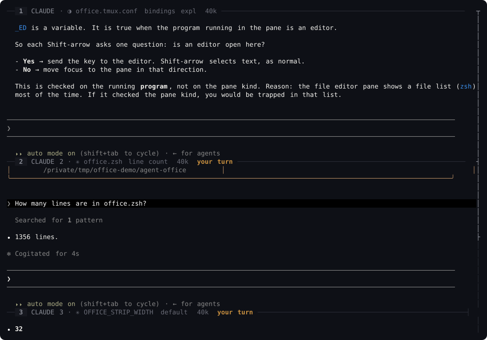

Each one in its own git worktree. The one that has stopped and is waiting on you says so, on its own border, without being asked.
macOS, paste into Terminal
brew install tmux fzf fd micro batWindows, inside WSL2
sudo apt install -y tmux zsh git fzf fd-find micro bat && mkdir -p ~/.local/bin && ln -sf "$(which fdfind)" ~/.local/bin/fdthen, on either
git clone https://github.com/hannesreinsch/agent-office.git ~/agent-office && ~/agent-office/install.shThen office on, and that is the whole product. The installer
adds one line to your .zshrc, one to your .tmux.conf, and a symlink.
It writes no keyboard map, in any terminal: every office key is either
Shift+arrow or the Ctrl+Space prefix, which every terminal on
every OS already sends.
Open source, MIT licensed, and all of it is on GitHub before you run any of it: the installer is one shell script you can read first, and so is everything it installs — about two thousand lines of zsh and a tmux config, with no daemon and no compiled anything.

Running three or four coding agents at once is normal now. The tooling for it was not. You ended up with a heap of terminal windows, a layout you rebuilt by hand every morning, and no idea which one was stuck — every window looked equally busy, so the only way to find the one waiting on you was to read all four. Then you did it again five minutes later.
That last part is why this exists. The window is the easy half.
Four agents you can keep track of is a different tool from four agents in four windows.
Four is the cap because a fifth session in a fifty-row window gets about nine rows, which is a slit and not a desk. Twenty seconds is the default and it is one variable.
office on puts you back exactly where you were, panes and layout and all.The office itself is cheap and the agents are not: measured with its own
office doctor, an agent pane costs about 500 MB, while the office's own shell
pane costs 9 MB and its file list 16 MB. Four agents is a RAM decision, which is why
there is a command that shows you the bill.
It watches the pane, not the agent. There is no marker to grep for and no hook to install, because the left column is pointed at whatever CLI you use — so the only thing it can rely on is that an agent that is working redraws: a spinner, an elapsed timer, output arriving. One that has stopped does not.
| what the pane was doing | lines that changed |
|---|---|
| streaming an answer, looks 5 s apart | 7 – 34 |
| thinking, spinner only, looks 5 s apart | 1 |
| idle at the prompt, looks 5 s apart | 0 – 1 |
| thinking, looks half a second apart | 1, in 19 of 20 |
| idle, looks half a second apart | 0, in 19 of 20 |
One real Claude Code session, Apple M4 Pro, macOS 26.5, tmux 3.7b, sampled with the same code the borders run. It takes two looks because either one alone is wrong: a hint line under the agent's input box rotates every eight seconds, so "nothing moved" cannot mean idle, and an agent that is only thinking moves exactly one line, so "one line moved" cannot mean idle either. Before the half-second look existed, a border said "your turn" for the eighteen seconds an agent spent thinking. Measure your own before believing any of these, including ours.
office off takes the tmux server and every process its panes started, detached ones included.OFFICE_* environment variable, and the defaults are the product.One network call, and you can turn it off. office on runs
git fetch in the background against this repo's own remote, so it can tell you when
you are behind, and it never pulls on its own. That is the only socket anything here opens:
nothing is uploaded, nothing is phoned home, no telemetry, no analytics.
OFFICE_UPDATE_CHECK=0 removes even that one.
The context readout reads two files on your own disk that Claude Code already wrote, and sends them nowhere. Panes you can see are never closed for you: a script that kills an agent you were coming back to is worse than a full disk.
Five probes drive a real tmux server to check all of this — they attach real clients on a pty and type raw bytes at them — and CI runs every one of them on macOS and Ubuntu, tmux 3.7b and 3.4, on every push. The source is public, and so is every claim on this page.
{kind=link}